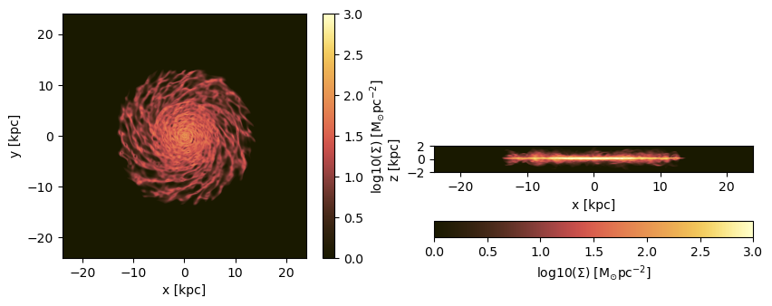
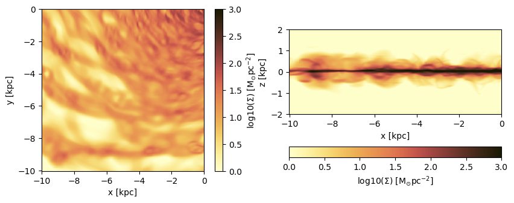
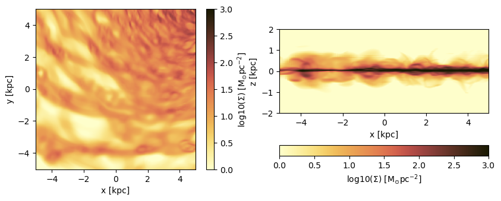
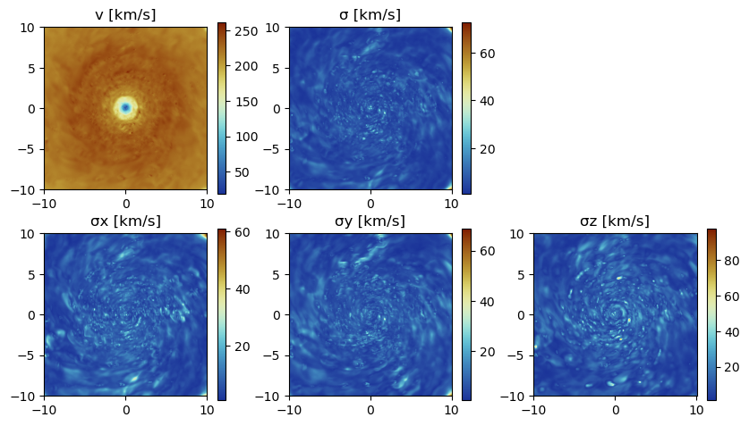
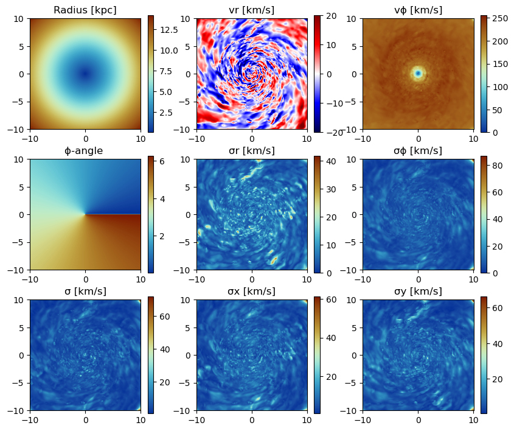
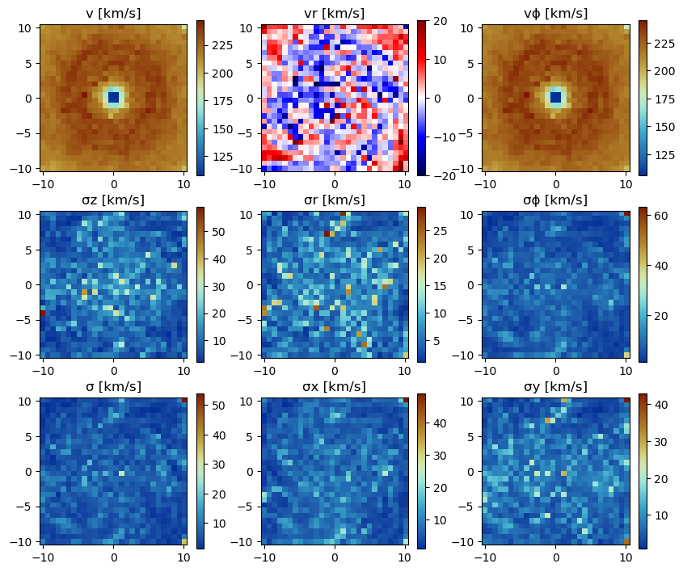
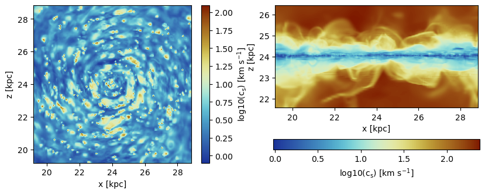
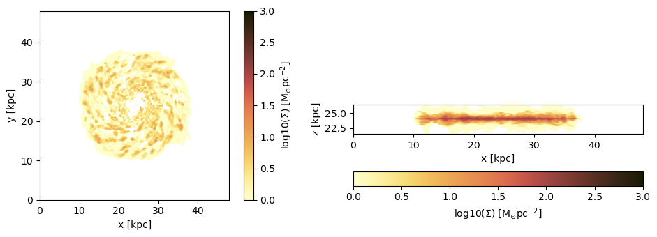

6. Hydro: Projections
Load The Data
using Mera
info = getinfo(300, "../../testing/simulations/mw_L10");
gas = gethydro(info, lmax=10); [Mera]: 2023-04-10T12:05:52.163
Code: RAMSES
output [300] summary:
mtime: 2023-04-09T05:34:09
ctime: 2023-04-10T08:08:14.488
=======================================================
simulation time: 445.89 [Myr]
boxlen: 48.0 [kpc]
ncpu: 640
ndim: 3
-------------------------------------------------------
amr: true
level(s): 6 - 10 --> cellsize(s): 750.0 [pc] - 46.88 [pc]
-------------------------------------------------------
hydro: true
hydro-variables: 7 --> (:rho, :vx, :vy, :vz, :p, :var6, :var7)
hydro-descriptor: (:density, :velocity_x, :velocity_y, :velocity_z, :pressure, :scalar_00, :scalar_01)
γ: 1.6667
-------------------------------------------------------
gravity: true
gravity-variables: (:epot, :ax, :ay, :az)
-------------------------------------------------------
particles: true
- Nstars: 5.445150e+05
particle-variables: 7 --> (:vx, :vy, :vz, :mass, :family, :tag, :birth)
particle-descriptor: (:position_x, :position_y, :position_z, :velocity_x, :velocity_y, :velocity_z, :mass, :identity, :levelp, :family, :tag, :birth_time)
-------------------------------------------------------
rt: false
clumps: false
-------------------------------------------------------
namelist-file: ("&COOLING_PARAMS", "&SF_PARAMS", "&AMR_PARAMS", "&BOUNDARY_PARAMS", "&OUTPUT_PARAMS", "&POISSON_PARAMS", "&RUN_PARAMS", "&FEEDBACK_PARAMS", "&HYDRO_PARAMS", "&INIT_PARAMS", "&REFINE_PARAMS")
-------------------------------------------------------
timer-file: true
compilation-file: false
makefile: true
patchfile: true
=======================================================
[Mera]: Get hydro data: 2023-04-10T12:05:52.197
Key vars=(:level, :cx, :cy, :cz)
Using var(s)=(1, 2, 3, 4, 5, 6, 7) = (:rho, :vx, :vy, :vz, :p, :var6, :var7)
domain:
xmin::xmax: 0.0 :: 1.0 ==> 0.0 [kpc] :: 48.0 [kpc]
ymin::ymax: 0.0 :: 1.0 ==> 0.0 [kpc] :: 48.0 [kpc]
zmin::zmax: 0.0 :: 1.0 ==> 0.0 [kpc] :: 48.0 [kpc]
Reading data...
Progress: 100%|█████████████████████████████████████████| Time: 0:00:23
Memory used for data table :2.3210865957662463 GB
-------------------------------------------------------gas.dataTable with 28320979 rows, 11 columns:
Columns:
# colname type
────────────────────
1 level Int64
2 cx Int64
3 cy Int64
4 cz Int64
5 rho Float64
6 vx Float64
7 vy Float64
8 vz Float64
9 p Float64
10 var6 Float64
11 var7 Float64Projection of Predefined Quantities
See the possible variables:
projection()Predefined vars for projections:
------------------------------------------------
=====================[gas]:=====================
-all the non derived hydro vars-
:cpu, :level, :rho, :cx, :cy, :cz, :vx, :vy, :vz, :p, var6,...
further possibilities: :rho, :density, :ρ
-derived hydro vars-
:x, :y, :z
:sd or :Σ or :surfacedensity
:mass, :cellsize, :freefall_time
:cs, :mach, :jeanslength, :jeansnumber
:t, :Temp, :Temperature with p/rho
==================[particles]:==================
all the non derived vars:
:cpu, :level, :id, :family, :tag
:x, :y, :z, :vx, :vy, :vz, :mass, :birth, :metal....
-derived particle vars-
:age
==============[gas or particles]:===============
:v, :ekin
squared => :vx2, :vy2, :vz2
velocity dispersion => σx, σy, σz, σ
related to a given center:
---------------------------
:vr_cylinder, vr_sphere (radial components)
:vϕ_cylinder, :vθ
squared => :vr_cylinder2, :vϕ_cylinder2
velocity dispersion => σr_cylinder, σϕ_cylinder
2d maps (not projected) => :r_cylinder, :ϕ
------------------------------------------------Projection of a Single Quantity in Different Directions (z,y,x)
Here we project the surface density in the z-direction of the data within a particular vertical range (domain=[0:1]) onto a grid corresponding to the maximum loaded level. Pass any object of HydroDataType (here: "gas") to the projection-function and select a variable by a Symbol (here: :sd = :surfacedensity = :Σ in Msol/pc^3)
proj_z = projection(gas, :sd, unit=:Msol_pc2, zrange=[0.45,0.55])
proj_z = projection(gas, :sd, :Msol_pc2, zrange=[0.45,0.55], verbose=false) # The keyword "unit" (singular) can be omit if the following order is preserved: data-object, quantity, unit.
proj_x = projection(gas, :sd, :Msol_pc2, direction = :x, zrange=[0.45,0.55], verbose=false); # Project the surface density in x-direction[Mera]: 2023-04-10T12:06:22.093
domain:
xmin::xmax: 0.0 :: 1.0 ==> 0.0 [kpc] :: 48.0 [kpc]
ymin::ymax: 0.0 :: 1.0 ==> 0.0 [kpc] :: 48.0 [kpc]
zmin::zmax: 0.45 :: 0.55 ==> 21.6 [kpc] :: 26.4 [kpc]
Selected var(s)=(:sd,)
Weighting = :mass
Effective resolution: 1024^2
Map size: 1024 x 1024
Pixel size: 46.875 [pc]
Simulation min.: 46.875 [pc]
Progress: 100%|█████████████████████████████████████████| Time: 0:00:02Select a Range Related to a Center
See also in the documentation for: load data by selection
cv = (gas.boxlen / 2.) * gas.scale.kpc # provide the box-center in kpc
proj_z = projection(gas, :sd, :Msol_pc2,
xrange=[-10.,10.], yrange=[-10.,10.], zrange=[-2.,2.],
center=[cv,cv,cv], range_unit=:kpc);[Mera]: 2023-04-10T12:06:30.071
center: [0.5, 0.5, 0.5] ==> [24.0 [kpc] :: 24.0 [kpc] :: 24.0 [kpc]]
domain:
xmin::xmax: 0.2916667 :: 0.7083333 ==> 14.0 [kpc] :: 34.0 [kpc]
ymin::ymax: 0.2916667 :: 0.7083333 ==> 14.0 [kpc] :: 34.0 [kpc]
zmin::zmax: 0.4583333 :: 0.5416667 ==> 22.0 [kpc] :: 26.0 [kpc]
Selected var(s)=(:sd,)
Weighting = :mass
Effective resolution: 1024^2
Map size: 428 x 428
Pixel size: 46.875 [pc]
Simulation min.: 46.875 [pc]Use the short notation for the box center :bc or :boxcenter for all dimensions (x,y,z):
proj_z = projection(gas, :sd, :Msol_pc2,
xrange=[-10.,10.], yrange=[-10.,10.], zrange=[-2.,2.],
center=[:boxcenter], range_unit=:kpc);[Mera]: 2023-04-10T12:06:32.245
center: [0.5, 0.5, 0.5] ==> [24.0 [kpc] :: 24.0 [kpc] :: 24.0 [kpc]]
domain:
xmin::xmax: 0.2916667 :: 0.7083333 ==> 14.0 [kpc] :: 34.0 [kpc]
ymin::ymax: 0.2916667 :: 0.7083333 ==> 14.0 [kpc] :: 34.0 [kpc]
zmin::zmax: 0.4583333 :: 0.5416667 ==> 22.0 [kpc] :: 26.0 [kpc]
Selected var(s)=(:sd,)
Weighting = :mass
Effective resolution: 1024^2
Map size: 428 x 428
Pixel size: 46.875 [pc]
Simulation min.: 46.875 [pc]proj_z = projection(gas, :sd, :Msol_pc2,
xrange=[-10.,10.], yrange=[-10.,10.], zrange=[-2.,2.],
center=[:bc], range_unit=:kpc);[Mera]: 2023-04-10T12:06:34.277
center: [0.5, 0.5, 0.5] ==> [24.0 [kpc] :: 24.0 [kpc] :: 24.0 [kpc]]
domain:
xmin::xmax: 0.2916667 :: 0.7083333 ==> 14.0 [kpc] :: 34.0 [kpc]
ymin::ymax: 0.2916667 :: 0.7083333 ==> 14.0 [kpc] :: 34.0 [kpc]
zmin::zmax: 0.4583333 :: 0.5416667 ==> 22.0 [kpc] :: 26.0 [kpc]
Selected var(s)=(:sd,)
Weighting = :mass
Effective resolution: 1024^2
Map size: 428 x 428
Pixel size: 46.875 [pc]
Simulation min.: 46.875 [pc]Use the box center notation for individual dimensions, here x,z:
proj_z = projection(gas, :sd, :Msol_pc2,
xrange=[-10.,10.], yrange=[-10.,10.], zrange=[-2.,2.],
center=[:bc, 24., :bc], range_unit=:kpc);[Mera]: 2023-04-10T12:06:36.462
center: [0.5, 0.5, 0.5] ==> [24.0 [kpc] :: 24.0 [kpc] :: 24.0 [kpc]]
domain:
xmin::xmax: 0.2916667 :: 0.7083333 ==> 14.0 [kpc] :: 34.0 [kpc]
ymin::ymax: 0.2916667 :: 0.7083333 ==> 14.0 [kpc] :: 34.0 [kpc]
zmin::zmax: 0.4583333 :: 0.5416667 ==> 22.0 [kpc] :: 26.0 [kpc]
Selected var(s)=(:sd,)
Weighting = :mass
Effective resolution: 1024^2
Map size: 428 x 428
Pixel size: 46.875 [pc]
Simulation min.: 46.875 [pc]Get Multiple Quantities
Get several quantities with one function call by passing an array containing the selected variables (at least one entry). The keyword name for the units is now in plural.
proj1_x = projection(gas, [:sd], units=[:Msol_pc2],
direction = :x,
xrange=[-10.,10.],
yrange=[-10.,10.],
zrange=[-2.,2.],
center=[24.,24.,24.],
range_unit=:kpc);[Mera]: 2023-04-10T12:06:43.824
center: [0.5, 0.5, 0.5] ==> [24.0 [kpc] :: 24.0 [kpc] :: 24.0 [kpc]]
domain:
xmin::xmax: 0.2916667 :: 0.7083333 ==> 14.0 [kpc] :: 34.0 [kpc]
ymin::ymax: 0.2916667 :: 0.7083333 ==> 14.0 [kpc] :: 34.0 [kpc]
zmin::zmax: 0.4583333 :: 0.5416667 ==> 22.0 [kpc] :: 26.0 [kpc]
Selected var(s)=(:sd,)
Weighting = :mass
Effective resolution: 1024^2
Map size: 428 x 86
Pixel size: 46.875 [pc]
Simulation min.: 46.875 [pc]
Progress: 100%|█████████████████████████████████████████| Time: 0:00:01Pass an array containing several quantities to process and their corresponding units:
proj1_z = projection(gas, [:sd, :vx], units=[:Msol_pc2, :km_s],
direction = :x,
xrange=[-10.,10.],
yrange=[-10.,10.],
zrange=[-2.,2.],
center=[24.,24.,24.],
range_unit=:kpc);[Mera]: 2023-04-10T12:06:48.228
center: [0.5, 0.5, 0.5] ==> [24.0 [kpc] :: 24.0 [kpc] :: 24.0 [kpc]]
domain:
xmin::xmax: 0.2916667 :: 0.7083333 ==> 14.0 [kpc] :: 34.0 [kpc]
ymin::ymax: 0.2916667 :: 0.7083333 ==> 14.0 [kpc] :: 34.0 [kpc]
zmin::zmax: 0.4583333 :: 0.5416667 ==> 22.0 [kpc] :: 26.0 [kpc]
Selected var(s)=(:sd, :vx)
Weighting = :mass
Effective resolution: 1024^2
Map size: 428 x 86
Pixel size: 46.875 [pc]
Simulation min.: 46.875 [pc]
Progress: 100%|█████████████████████████████████████████| Time: 0:00:03The function can be called without any keywords by preserving the following order: dataobject, variables, units
proj1_z = projection(gas, [:sd , :vx], [:Msol_pc2, :km_s],
direction = :x,
xrange=[-10.,10.],
yrange=[-10.,10.],
zrange=[-2.,2.],
center=[24.,24.,24.],
range_unit=:kpc);[Mera]: 2023-04-10T12:06:52.513
center: [0.5, 0.5, 0.5] ==> [24.0 [kpc] :: 24.0 [kpc] :: 24.0 [kpc]]
domain:
xmin::xmax: 0.2916667 :: 0.7083333 ==> 14.0 [kpc] :: 34.0 [kpc]
ymin::ymax: 0.2916667 :: 0.7083333 ==> 14.0 [kpc] :: 34.0 [kpc]
zmin::zmax: 0.4583333 :: 0.5416667 ==> 22.0 [kpc] :: 26.0 [kpc]
Selected var(s)=(:sd, :vx)
Weighting = :mass
Effective resolution: 1024^2
Map size: 428 x 86
Pixel size: 46.875 [pc]
Simulation min.: 46.875 [pc]
Progress: 100%|█████████████████████████████████████████| Time: 0:00:03If all selected variables should be of the same unit use the following arguments: dataobject, array of quantities, unit (no array needed)
projvel_z = projection(gas, [:vx, :vy, :vz], :km_s,
xrange=[-10.,10.],
yrange=[-10.,10.],
zrange=[-2.,2.],
center=[24.,24.,24.],
range_unit=:kpc);[Mera]: 2023-04-10T12:06:56.640
center: [0.5, 0.5, 0.5] ==> [24.0 [kpc] :: 24.0 [kpc] :: 24.0 [kpc]]
domain:
xmin::xmax: 0.2916667 :: 0.7083333 ==> 14.0 [kpc] :: 34.0 [kpc]
ymin::ymax: 0.2916667 :: 0.7083333 ==> 14.0 [kpc] :: 34.0 [kpc]
zmin::zmax: 0.4583333 :: 0.5416667 ==> 22.0 [kpc] :: 26.0 [kpc]
Selected var(s)=(:vx, :vy, :vz, :sd)
Weighting = :mass
Effective resolution: 1024^2
Map size: 428 x 428
Pixel size: 46.875 [pc]
Simulation min.: 46.875 [pc]Function Output
List the fields of the assigned object:
propertynames(proj1_z)(:maps, :maps_unit, :maps_lmax, :maps_weight, :maps_mode, :lmax_projected, :lmin, :lmax, :ranges, :extent, :cextent, :ratio, :effres, :pixsize, :boxlen, :smallr, :smallc, :scale, :info)The projected 2D maps are stored in a dictionary:
proj1_z.mapsDataStructures.SortedDict{Any, Any, Base.Order.ForwardOrdering} with 2 entries:
:sd => [0.139938 0.137134 … 0.0559771 0.039597; 0.139217 0.137082 … 0.0542157…
:vx => [77.2952 76.0304 … 81.0816 35.6391; 77.0928 75.8627 … 76.2712 35.0263;…The maps can be accessed by giving the name of the dictionary:
proj1_z.maps[:sd]428×86 Matrix{Float64}:
0.139938 0.137134 0.131767 … 0.0872412 0.0559771 0.039597
0.139217 0.137082 0.132994 0.0816654 0.0542157 0.0398295
0.137721 0.136923 0.135395 0.0704139 0.0505852 0.0401868
0.130652 0.132227 0.135241 0.060856 0.0473774 0.0403063
0.118059 0.123044 0.132582 0.0530844 0.0446923 0.0402881
0.10163 0.110067 0.126214 … 0.0476658 0.0429264 0.0404395
0.0813691 0.0933035 0.116143 0.044649 0.0421367 0.0408176
0.0669271 0.07945 0.103416 0.0428914 0.0417599 0.041163
0.0582977 0.0685004 0.0880284 0.0423535 0.0417506 0.0414303
0.0535281 0.06126 0.0760619 0.0423028 0.0420018 0.0418397
0.0526318 0.0577423 0.0675286 … 0.0427375 0.0425119 0.0423895
0.052837 0.0560511 0.0622078 0.0431381 0.0429604 0.0428636
0.0541345 0.0561769 0.0600908 0.0435055 0.0433486 0.0432631
⋮ ⋱ ⋮
0.345865 0.369255 0.413998 0.629721 0.626234 0.624502
0.331128 0.356762 0.405799 0.633807 0.626743 0.623164
0.301443 0.329698 0.38375 0.635831 0.62586 0.620785
0.264759 0.29386 0.349533 0.636119 0.623004 0.616308
0.221068 0.249242 0.303144 … 0.634589 0.618091 0.609649
0.18151 0.207886 0.25835 0.626543 0.606447 0.596148
0.146155 0.169863 0.215215 0.611892 0.588007 0.575739
0.116928 0.137085 0.175624 0.589726 0.562302 0.548179
0.0937383 0.109461 0.139499 0.560153 0.529411 0.513549
0.0759276 0.087617 0.109919 … 0.527518 0.495959 0.479666
0.063372 0.0714275 0.0867677 0.49155 0.461674 0.446257
0.0570274 0.063266 0.0751304 0.473422 0.444384 0.429406The units of the maps are stored in:
proj1_z.maps_unitDataStructures.SortedDict{Any, Any, Base.Order.ForwardOrdering} with 2 entries:
:sd => :Msol_pc2
:vx => :km_sProjections on a different grid size (see subject below):
proj1_z.maps_lmaxDataStructures.SortedDict{Any, Any, Base.Order.ForwardOrdering}()The following fields are helpful for further calculations or plots.
proj1_z.ranges # normalized to the domain=[0:1]6-element Vector{Float64}:
0.29166666666647767
0.7083333333328743
0.29166666666647767
0.7083333333328743
0.4583333333330363
0.5416666666663156proj1_z.extent # ranges in code units4-element Vector{Float64}:
13.96875
34.03125
21.984375
26.015625proj1_z.cextent # ranges in code units relative to a given center (by default: box center)4-element Vector{Float64}:
-10.031250000015556
10.031249999984444
-2.0156250000155556
2.0156249999844444proj1_z.ratio # the ratio between the two ranges4.976744186046512Plot Maps with Python
proj_z = projection(gas, :sd, :Msol_pc2,
zrange=[-2.,2.], center=[:boxcenter], range_unit=:kpc,
verbose=false)
proj_x = projection(gas, :sd, :Msol_pc2,
zrange=[-2.,2.], center=[:boxcenter], range_unit=:kpc,
verbose=false,
direction = :x);Progress: 100%|█████████████████████████████████████████| Time: 0:00:02Python functions can be directly called in Julia, which gives the opportunity, e.g. to use the Matplotlib library.
using PyPlot
using ColorSchemes
cmap3 = ColorMap(ColorSchemes.Blues.colors)
cmap = ColorMap(ColorSchemes.lajolla.colors) # See http://www.fabiocrameri.ch/colourmaps.php
cmap2 = ColorMap(reverse(ColorSchemes.roma.colors))

figure(figsize=(10, 3.5))
subplot(1,2,1)
im = imshow( log10.( permutedims(proj_z.maps[:sd])), cmap=cmap, aspect=proj_z.ratio, origin="lower", extent=proj_z.cextent, vmin=0, vmax=3)
xlabel("x [kpc]")
ylabel("y [kpc]")
cb = colorbar(im, label=L"\mathrm{log10(\Sigma) \ [M_{\odot} pc^{-2}]}")
subplot(1,2,2)
im = imshow( log10.( permutedims(proj_x.maps[:sd])), cmap=cmap, origin="lower", extent=proj_x.cextent, vmin=0, vmax=3)
xlabel("x [kpc]")
ylabel("z [kpc]")
cb = colorbar(im, label=L"\mathrm{log10(\Sigma) \ [M_{\odot} pc^{-2}]}",orientation="horizontal", pad=0.2);
Project a specific spatial range and plot the axes of the map relative to the box-center (given by keyword: data_center):
proj_z = projection(gas, :sd, :Msol_pc2,
xrange=[-10.,0.], yrange=[-10.,0.], zrange=[-2.,2.], center=[:boxcenter], range_unit=:kpc,
verbose=false,
data_center=[24.,24.,24.], data_center_unit=:kpc)
proj_x = projection(gas, :sd, :Msol_pc2,
xrange=[-10.,0.], yrange=[-10.,0.], zrange=[-2.,2.], center=[:boxcenter], range_unit=:kpc,
verbose=false,
data_center=[24.,24.,24.], data_center_unit=:kpc,
direction = :x);figure(figsize=(10, 3.5))
subplot(1,2,1)
im = imshow( log10.( permutedims(proj_z.maps[:sd])), cmap=cmap, aspect=proj_z.ratio, origin="lower", extent=proj_z.cextent, vmin=0, vmax=3)
xlabel("x [kpc]")
ylabel("y [kpc]")
cb = colorbar(im, label=L"\mathrm{log10(\Sigma) \ [M_{\odot} pc^{-2}]}")
subplot(1,2,2)
im = imshow( log10.( permutedims(proj_x.maps[:sd])), cmap=cmap, origin="lower", extent=proj_x.cextent, vmin=0, vmax=3)
xlabel("x [kpc]")
ylabel("z [kpc]")
cb = colorbar(im, label=L"\mathrm{log10(\Sigma) \ [M_{\odot} pc^{-2}]}",orientation="horizontal", pad=0.2);
Plot the axes of the map relative to the map-center (given by keyword: data_center):
proj_z = projection(gas, :sd, :Msol_pc2,
xrange=[-10.,0.], yrange=[-10.,0.], zrange=[-2.,2.], center=[:boxcenter], range_unit=:kpc,
verbose=false,
data_center=[19.,19.,24.], data_center_unit=:kpc)
proj_x = projection(gas, :sd, :Msol_pc2,
xrange=[-10.,0.], yrange=[-10.,0.], zrange=[-2.,2.], center=[:boxcenter], range_unit=:kpc,
verbose=false,
data_center=[19.,19.,24.], data_center_unit=:kpc,
direction = :x);figure(figsize=(10, 3.5))
subplot(1,2,1)
im = imshow( log10.( permutedims(proj_z.maps[:sd])), cmap=cmap, aspect=proj_z.ratio, origin="lower", extent=proj_z.cextent, vmin=0, vmax=3)
xlabel("x [kpc]")
ylabel("y [kpc]")
cb = colorbar(im, label=L"\mathrm{log10(\Sigma) \ [M_{\odot} pc^{-2}]}")
subplot(1,2,2)
im = imshow( log10.( permutedims(proj_x.maps[:sd])), cmap=cmap, origin="lower", extent=proj_x.cextent, vmin=0, vmax=3)
xlabel("x [kpc]")
ylabel("z [kpc]")
cb = colorbar(im, label=L"\mathrm{log10(\Sigma) \ [M_{\odot} pc^{-2}]}",orientation="horizontal", pad=0.2);
Projections of Derived Kinematic Data
Use quantities in cartesian coordinates:
Project the following derived data (mass weighted by default): The absolute value of the velocity :v, the velocity dispersion :σ in different directions. The Julia language supports Unicode characters and can be inserted by e.g. "\sigma + tab-key" leading to: σ.
proj_z = projection(gas, [:v, :σ, :σx, :σy, :σz], :km_s,
xrange=[-10.,10.], yrange=[-10.,10.], zrange=[-2.,2.],
center=[24.,24.,24.], range_unit=:kpc);[Mera]: 2023-04-10T13:07:59.030
center: [0.5, 0.5, 0.5] ==> [24.0 [kpc] :: 24.0 [kpc] :: 24.0 [kpc]]
domain:
xmin::xmax: 0.2916667 :: 0.7083333 ==> 14.0 [kpc] :: 34.0 [kpc]
ymin::ymax: 0.2916667 :: 0.7083333 ==> 14.0 [kpc] :: 34.0 [kpc]
zmin::zmax: 0.4583333 :: 0.5416667 ==> 22.0 [kpc] :: 26.0 [kpc]
Selected var(s)=(:v, :σ, :σx, :σy, :σz, :vx, :vx2, :vy, :vy2, :vz, :vz2, :v2, :sd)
Weighting = :mass
Effective resolution: 1024^2
Map size: 428 x 428
Pixel size: 46.875 [pc]
Simulation min.: 46.875 [pc]
Progress: 100%|█████████████████████████████████████████| Time: 0:00:05For the velocity dispersion additional maps are created to created the mass-weighted quantity: E. g.: σx = sqrt( <vx^2> - < vx >^2 )
proj_z.mapsDataStructures.SortedDict{Any, Any, Base.Order.ForwardOrdering} with 13 entries:
:sd => [6.6833e-5 6.80617e-5 … 0.000177126 0.000163977; 7.28461e-5 7.45496e-…
:v => [200.553 200.475 … 206.694 206.58; 201.081 201.027 … 206.638 206.51; …
:v2 => [9.55132 9.53998 … 9.97416 9.96594; 9.58466 9.57475 … 9.96848 9.95871…
:vx => [2.20801 2.21133 … -2.44779 -2.44328; 2.2193 2.22319 … -2.44946 -2.44…
:vx2 => [4.99404 5.00648 … 6.07258 6.05673; 5.03519 5.04973 … 6.07857 6.06466…
:vy => [-2.1024 -2.09689 … -1.95211 -1.9531; -2.10305 -2.09739 … -1.94946 -1…
:vy2 => [4.53656 4.51184 … 3.85382 3.86121; 4.52933 4.50363 … 3.84079 3.8444;…
:vz => [-0.00975545 -0.0138632 … 0.145365 0.144179; -0.0151512 -0.0196064 … …
:vz2 => [0.0207161 0.0216515 … 0.0477525 0.048001; 0.0201404 0.0213888 … 0.04…
:σ => [29.1564 28.8564 … 12.9517 13.3988; 27.9589 27.5801 … 12.8922 13.3103…
:σx => [22.5962 22.3827 … 18.6511 19.3549; 21.74 21.4671 … 18.3996 19.0645; …
:σy => [22.3791 22.2288 … 13.6137 14.1599; 21.4007 21.2053 … 13.1819 13.719;…
:σz => [9.41661 9.60612 … 10.6993 10.8176; 9.25306 9.50375 … 10.6957 10.8257…proj_z.maps_unitDataStructures.SortedDict{Any, Any, Base.Order.ForwardOrdering} with 13 entries:
:sd => :standard
:v => :km_s
:v2 => :standard
:vx => :standard
:vx2 => :standard
:vy => :standard
:vy2 => :standard
:vz => :standard
:vz2 => :standard
:σ => :km_s
:σx => :km_s
:σy => :km_s
:σz => :km_susedmemory(proj_z);Memory used: 19.595 MBfigure(figsize=(10, 5.5))
subplot(2, 3, 1)
title("v [km/s]")
imshow( (permutedims(proj_z.maps[:v]) ), cmap=cmap2, origin="lower", extent=proj_z.cextent)
colorbar()
subplot(2, 3, 2)
title("σ [km/s]")
imshow( (permutedims(proj_z.maps[:σ]) ), cmap=cmap2, origin="lower", extent=proj_z.cextent)
colorbar()
subplot(2, 3, 4)
title("σx [km/s]")
imshow( (permutedims(proj_z.maps[:σx]) ), cmap=cmap2, origin="lower", extent=proj_z.cextent)
colorbar()
subplot(2, 3, 5)
title("σy [km/s]")
imshow( permutedims(proj_z.maps[:σy]) , cmap=cmap2, origin="lower", extent=proj_z.cextent)
colorbar()
subplot(2, 3, 6)
title("σz [km/s]")
imshow( permutedims(proj_z.maps[:σz]) , cmap=cmap2, origin="lower", extent=proj_z.cextent)
colorbar();

Use quantities in cylindrical coordinates:
Face-on disc (z-direction)
For the cylindrical or spherical components of a quantity, the center of the coordinate system is used (keywords: datacenter = center default) and can be given with the keyword "datacenter" and its units with "datacenterunit". Additionally, the quantities that are based on cartesian coordinates can be given.
proj_z = projection(gas, [:v, :σ, :σx, :σy, :ϕ, :r_cylinder, :vr_cylinder, :vϕ_cylinder, :σr_cylinder, :σϕ_cylinder],
units=[:km_s,:km_s,:km_s, :km_s, :standard, :kpc, :km_s, :km_s, :km_s, :km_s],
xrange=[-10.,10.], yrange=[-10.,10.], zrange=[-2.,2.],
center=[:boxcenter], range_unit=:kpc,
data_center=[24.,24.,24.],
data_center_unit=:kpc); [Mera]: 2023-04-10T13:08:23.110
center: [0.5, 0.5, 0.5] ==> [24.0 [kpc] :: 24.0 [kpc] :: 24.0 [kpc]]
domain:
xmin::xmax: 0.2916667 :: 0.7083333 ==> 14.0 [kpc] :: 34.0 [kpc]
ymin::ymax: 0.2916667 :: 0.7083333 ==> 14.0 [kpc] :: 34.0 [kpc]
zmin::zmax: 0.4583333 :: 0.5416667 ==> 22.0 [kpc] :: 26.0 [kpc]
Selected var(s)=(:v, :σ, :σx, :σy, :ϕ, :r_cylinder, :vr_cylinder, :vϕ_cylinder, :σr_cylinder, :σϕ_cylinder, :vx, :vx2, :vy, :vy2, :v2, :vr_cylinder2, :vϕ_cylinder2, :sd)
Weighting = :mass
Effective resolution: 1024^2
Map size: 428 x 428
Pixel size: 46.875 [pc]
Simulation min.: 46.875 [pc]
Progress: 100%|█████████████████████████████████████████| Time: 0:00:07proj_z.mapsDataStructures.SortedDict{Any, Any, Base.Order.ForwardOrdering} with 18 entries:
:r_cylinder => [14.0758 14.0427 … 14.1201 14.1534; 14.0427 14.0096 … 14.087…
:sd => [6.6833e-5 6.80617e-5 … 0.000177126 0.000163977; 7.28461e-5 …
:v => [200.553 200.475 … 206.694 206.58; 201.081 201.027 … 206.638…
:v2 => [9.55132 9.53998 … 9.97416 9.96594; 9.58466 9.57475 … 9.9684…
:vr_cylinder => [-4.89687 -5.55316 … 22.2491 21.7111; -5.09439 -5.78506 … 22…
:vr_cylinder2 => [0.013517 0.0160811 … 0.166383 0.16509; 0.0139447 0.0166047 …
:vx => [2.20801 2.21133 … -2.44779 -2.44328; 2.2193 2.22319 … -2.44…
:vx2 => [4.99404 5.00648 … 6.07258 6.05673; 5.03519 5.04973 … 6.0785…
:vy => [-2.1024 -2.09689 … -1.95211 -1.9531; -2.10305 -2.09739 … -1…
:vy2 => [4.53656 4.51184 … 3.85382 3.86121; 4.52933 4.50363 … 3.8407…
:vϕ_cylinder => [199.868 199.758 … 204.153 204.024; 200.431 200.34 … 204.133…
:vϕ_cylinder2 => [9.51708 9.50225 … 9.76002 9.75285; 9.55058 9.53676 … 9.7569…
:σ => [29.1564 28.8564 … 12.9517 13.3988; 27.9589 27.5801 … 12.892…
:σr_cylinder => [5.84342 6.18975 … 14.8473 15.4446; 5.83191 6.15915 … 14.326…
:σx => [22.5962 22.3827 … 18.6511 19.3549; 21.74 21.4671 … 18.3996 …
:σy => [22.3791 22.2288 … 13.6137 14.1599; 21.4007 21.2053 … 13.181…
:σϕ_cylinder => [31.2613 30.9453 … 17.0522 17.6776; 29.935 29.5447 … 16.903 …
:ϕ => [3.92699 3.92463 … 2.35306 2.35073; 3.92935 3.92699 … 2.3507…proj_z.maps_unitDataStructures.SortedDict{Any, Any, Base.Order.ForwardOrdering} with 18 entries:
:r_cylinder => :kpc
:sd => :standard
:v => :km_s
:v2 => :standard
:vr_cylinder => :km_s
:vr_cylinder2 => :standard
:vx => :standard
:vx2 => :standard
:vy => :standard
:vy2 => :standard
:vϕ_cylinder => :km_s
:vϕ_cylinder2 => :standard
:σ => :km_s
:σr_cylinder => :km_s
:σx => :km_s
:σy => :km_s
:σϕ_cylinder => :km_s
:ϕ => :radianfigure(figsize=(10, 8.5))
subplot(3, 3, 1)
title("Radius [kpc]")
imshow( permutedims(proj_z.maps[:r_cylinder] ), cmap=cmap2, origin="lower", extent=proj_z.cextent)
colorbar()
subplot(3, 3, 2)
title("vr [km/s]")
imshow( permutedims(proj_z.maps[:vr_cylinder] ), cmap="seismic", origin="lower", extent=proj_z.cextent, vmin=-20.,vmax=20.)
colorbar()
subplot(3, 3, 3)
title("vϕ [km/s]")
imshow( permutedims(proj_z.maps[:vϕ_cylinder] ), cmap=cmap2, origin="lower", extent=proj_z.cextent)
colorbar()
subplot(3, 3, 4)
title("ϕ-angle ")
imshow( permutedims(proj_z.maps[:ϕ]) , cmap=cmap2, origin="lower", extent=proj_z.cextent)
colorbar()
subplot(3, 3, 5)
title("σr [km/s]")
imshow( permutedims(proj_z.maps[:σr_cylinder] ), cmap=cmap2, origin="lower", extent=proj_z.cextent)
colorbar()
subplot(3, 3, 6)
title("σϕ [km/s]")
imshow( permutedims(proj_z.maps[:σϕ_cylinder] ), cmap=cmap2, origin="lower", extent=proj_z.cextent)
colorbar()
subplot(3, 3, 7)
title("σ [km/s]")
imshow( permutedims(proj_z.maps[:σ]) , cmap=cmap2, origin="lower", extent=proj_z.cextent)
colorbar()
subplot(3, 3, 8)
title("σx [km/s]")
imshow( permutedims(proj_z.maps[:σx] ), cmap=cmap2, origin="lower", extent=proj_z.cextent)
colorbar()
subplot(3, 3, 9)
title("σy [km/s]")
imshow( permutedims(proj_z.maps[:σy] ), cmap=cmap2, origin="lower", extent=proj_z.cextent)
colorbar();
Project on a Coarser Grid
lmax
The default is the projection on the maximum loaded grid level (always provided in the output). Choose a smaller/larger level with the keyword lmax (independend on the maximum level of the simulation) to project on a coarser/finer grid. By default, the data is assumed to be in the center of the simulation box.
proj_z = projection(gas, [:v, :σ, :σx, :σy, :σz, :vr_cylinder, :vϕ_cylinder, :σr_cylinder, :σϕ_cylinder],
:km_s,
xrange=[-10.,10.], yrange=[-10.,10.], zrange=[-2.,2.],
center=[:boxcenter], range_unit=:kpc,
lmax=6); [Mera]: 2023-04-10T13:12:01.879
center: [0.5, 0.5, 0.5] ==> [24.0 [kpc] :: 24.0 [kpc] :: 24.0 [kpc]]
domain:
xmin::xmax: 0.2916667 :: 0.7083333 ==> 14.0 [kpc] :: 34.0 [kpc]
ymin::ymax: 0.2916667 :: 0.7083333 ==> 14.0 [kpc] :: 34.0 [kpc]
zmin::zmax: 0.4583333 :: 0.5416667 ==> 22.0 [kpc] :: 26.0 [kpc]
Selected var(s)=(:v, :σ, :σx, :σy, :σz, :vr_cylinder, :vϕ_cylinder, :σr_cylinder, :σϕ_cylinder, :vx, :vx2, :vy, :vy2, :vz, :vz2, :v2, :vr_cylinder2, :vϕ_cylinder2, :sd)
Weighting = :mass
Effective resolution: 64^2
Map size: 28 x 28
Pixel size: 750.0 [pc]
Simulation min.: 46.875 [pc]
Progress: 100%|█████████████████████████████████████████| Time: 0:00:08# this corresponds to an effective resolution of:
proj_z.effres64figure(figsize=(10, 8.5))
subplot(3, 3, 1)
title("v [km/s]")
imshow( permutedims(proj_z.maps[:v] ), cmap=cmap2, origin="lower", extent=proj_z.cextent)
colorbar()
subplot(3, 3, 2)
title("vr [km/s]")
imshow( permutedims(proj_z.maps[:vr_cylinder] ), cmap="seismic", origin="lower", extent=proj_z.cextent, vmin=-20.,vmax=20.)
colorbar()
subplot(3, 3, 3)
title("vϕ [km/s]")
imshow( permutedims(proj_z.maps[:vϕ_cylinder] ), cmap=cmap2, origin="lower", extent=proj_z.cextent)
colorbar()
subplot(3, 3, 4)
title("σz [km/s]")
imshow( permutedims(proj_z.maps[:σz] ), cmap=cmap2, origin="lower", extent=proj_z.cextent)
colorbar()
subplot(3, 3, 5)
title("σr [km/s]")
imshow( permutedims(proj_z.maps[:σr_cylinder] ), cmap=cmap2, origin="lower", extent=proj_z.cextent)
colorbar()
subplot(3, 3, 6)
title("σϕ [km/s]")
imshow( permutedims(proj_z.maps[:σϕ_cylinder] ), cmap=cmap2, origin="lower", extent=proj_z.cextent)
colorbar()
subplot(3, 3, 7)
title("σ [km/s]")
imshow( permutedims(proj_z.maps[:σ]) , cmap=cmap2, origin="lower", extent=proj_z.cextent)
colorbar()
subplot(3, 3, 8)
title("σx [km/s]")
imshow( permutedims(proj_z.maps[:σx] ), cmap=cmap2, origin="lower", extent=proj_z.cextent)
colorbar()
subplot(3, 3, 9)
title("σy [km/s]")
imshow( permutedims(proj_z.maps[:σy] ), cmap=cmap2, origin="lower", extent=proj_z.cextent)
colorbar();
res
Choose the effective resolution (related to the full box) of the projected grid:
proj_z = projection(gas, [:v, :σ, :σx, :σy, :σz, :vr_cylinder, :vϕ_cylinder, :σr_cylinder, :σϕ_cylinder],
:km_s,
xrange=[-10.,10.], yrange=[-10.,10.], zrange=[-2.,2.],
center=[:boxcenter], range_unit=:kpc,
res=100); [Mera]: 2023-04-10T13:16:07.047
center: [0.5, 0.5, 0.5] ==> [24.0 [kpc] :: 24.0 [kpc] :: 24.0 [kpc]]
domain:
xmin::xmax: 0.2916667 :: 0.7083333 ==> 14.0 [kpc] :: 34.0 [kpc]
ymin::ymax: 0.2916667 :: 0.7083333 ==> 14.0 [kpc] :: 34.0 [kpc]
zmin::zmax: 0.4583333 :: 0.5416667 ==> 22.0 [kpc] :: 26.0 [kpc]
Selected var(s)=(:v, :σ, :σx, :σy, :σz, :vr_cylinder, :vϕ_cylinder, :σr_cylinder, :σϕ_cylinder, :vx, :vx2, :vy, :vy2, :vz, :vz2, :v2, :vr_cylinder2, :vϕ_cylinder2, :sd)
Weighting = :mass
Effective resolution: 100^2
Map size: 42 x 42
Pixel size: 480.0 [pc]
Simulation min.: 46.875 [pc]
Progress: 100%|█████████████████████████████████████████| Time: 0:00:08pxsize
Choose the pixel size in a physical unit, e.g. pixel-size=100 pc. The data is projected to a grid with a pixel-size that is closest to the given number, but not larger:
proj_z = projection(gas, [:v, :σ, :σx, :σy, :σz, :vr_cylinder, :vϕ_cylinder, :σr_cylinder, :σϕ_cylinder],
:km_s,
xrange=[-10.,10.], yrange=[-10.,10.], zrange=[-2.,2.],
center=[:boxcenter], range_unit=:kpc,
pxsize=[100., :pc]); [Mera]: 2023-04-10T13:20:23.556
center: [0.5, 0.5, 0.5] ==> [24.0 [kpc] :: 24.0 [kpc] :: 24.0 [kpc]]
domain:
xmin::xmax: 0.2916667 :: 0.7083333 ==> 14.0 [kpc] :: 34.0 [kpc]
ymin::ymax: 0.2916667 :: 0.7083333 ==> 14.0 [kpc] :: 34.0 [kpc]
zmin::zmax: 0.4583333 :: 0.5416667 ==> 22.0 [kpc] :: 26.0 [kpc]
Selected var(s)=(:v, :σ, :σx, :σy, :σz, :vr_cylinder, :vϕ_cylinder, :σr_cylinder, :σϕ_cylinder, :vx, :vx2, :vy, :vy2, :vz, :vz2, :v2, :vr_cylinder2, :vϕ_cylinder2, :sd)
Weighting = :mass
Effective resolution: 481^2
Map size: 201 x 201
Pixel size: 99.792 [pc]
Simulation min.: 46.875 [pc]
Progress: 100%|█████████████████████████████████████████| Time: 0:00:08Projection of Thermal Data
The the sound speed is calculated from the loaded adiabatic index (from the hydro files):
proj_z = projection(gas, :cs, :km_s, zrange=[0.45,0.55], xrange=[0.4, 0.6], yrange=[0.4, 0.6])
proj_x = projection(gas, :cs, :km_s, zrange=[0.45,0.55], xrange=[0.4, 0.6], yrange=[0.4, 0.6], direction=:x);[Mera]: 2023-04-10T13:38:42.414
domain:
xmin::xmax: 0.4 :: 0.6 ==> 19.2 [kpc] :: 28.8 [kpc]
ymin::ymax: 0.4 :: 0.6 ==> 19.2 [kpc] :: 28.8 [kpc]
zmin::zmax: 0.45 :: 0.55 ==> 21.6 [kpc] :: 26.4 [kpc]
Selected var(s)=(:cs, :sd)
Weighting = :mass
Effective resolution: 1024^2
Map size: 206 x 206
Pixel size: 46.875 [pc]
Simulation min.: 46.875 [pc]
[Mera]: 2023-04-10T13:38:45.005
domain:
xmin::xmax: 0.4 :: 0.6 ==> 19.2 [kpc] :: 28.8 [kpc]
ymin::ymax: 0.4 :: 0.6 ==> 19.2 [kpc] :: 28.8 [kpc]
zmin::zmax: 0.45 :: 0.55 ==> 21.6 [kpc] :: 26.4 [kpc]
Selected var(s)=(:cs, :sd)
Weighting = :mass
Effective resolution: 1024^2
Map size: 206 x 104
Pixel size: 46.875 [pc]
Simulation min.: 46.875 [pc]
Progress: 100%|█████████████████████████████████████████| Time: 0:00:01figure(figsize=(10, 3.5))
subplot(1, 2, 1)
im = imshow( log10.(permutedims(proj_z.maps[:cs]) ), cmap=cmap2, origin="lower", extent=proj_z.cextent)
xlabel("x [kpc]")
ylabel("z [kpc]")
cb = colorbar(im, label=L"\mathrm{log10(c_s) \ [km \ s^{-1}]}")
subplot(1, 2, 2)
im = imshow( log10.(permutedims(proj_x.maps[:cs]) ), cmap=cmap2, origin="lower", extent=proj_x.cextent)
xlabel("x [kpc]")
ylabel("z [kpc]")
cb = colorbar(im, label=L"\mathrm{log10(c_s) \ [km \ s^{-1}]}",orientation="horizontal", pad=0.2);

Change the adiabatic index in the field gas.info.gamma to use a different value in the projection calculation.
Projection of Masked Data
Mask higher densities by creating a Bool-array where the lower density cells correspond to false entries:
#density = 4e-3 / gas.scale.Msol_pc3
#mask = map(row->row.rho < density, gas.data);
mask_nH = getvar(gas, :rho, :nH) .< 1. # cm-3
mask_T = getvar(gas, :Temperature, :K) .< 1e4 # K
mask_tot = mask_nH .* mask_T;Pass the mask to the projection function:
proj_z = projection(gas, :sd, :Msol_pc2, zrange=[0.45,0.55], mask=mask_tot)
proj_x = projection(gas, :sd, :Msol_pc2, zrange=[0.45,0.55], mask=mask_tot, direction=:x);[Mera]: 2023-04-10T13:25:01.398
domain:
xmin::xmax: 0.0 :: 1.0 ==> 0.0 [kpc] :: 48.0 [kpc]
ymin::ymax: 0.0 :: 1.0 ==> 0.0 [kpc] :: 48.0 [kpc]
zmin::zmax: 0.45 :: 0.55 ==> 21.6 [kpc] :: 26.4 [kpc]
Selected var(s)=(:sd,)
Weighting = :mass
Effective resolution: 1024^2
Map size: 1024 x 1024
Pixel size: 46.875 [pc]
Simulation min.: 46.875 [pc]
:mask provided by function
[Mera]: 2023-04-10T13:25:02.534
domain:
xmin::xmax: 0.0 :: 1.0 ==> 0.0 [kpc] :: 48.0 [kpc]
ymin::ymax: 0.0 :: 1.0 ==> 0.0 [kpc] :: 48.0 [kpc]
zmin::zmax: 0.45 :: 0.55 ==> 21.6 [kpc] :: 26.4 [kpc]
Selected var(s)=(:sd,)
Weighting = :mass
Effective resolution: 1024^2
Map size: 1024 x 104
Pixel size: 46.875 [pc]
Simulation min.: 46.875 [pc]
:mask provided by functionfigure(figsize=(10, 3.5))
subplot(1,2,1)
im = imshow( log10.( permutedims(proj_z.maps[:sd])), cmap=cmap, aspect=proj_z.ratio, origin="lower", extent=proj_z.cextent, vmin=0, vmax=3)
xlabel("x [kpc]")
ylabel("y [kpc]")
cb = colorbar(im, label=L"\mathrm{log10(\Sigma) \ [M_{\odot} pc^{-2}]}")
subplot(1,2,2)
im = imshow( log10.( permutedims(proj_x.maps[:sd])), cmap=cmap, origin="lower", extent=proj_x.cextent, vmin=0, vmax=3)
xlabel("x [kpc]")
ylabel("z [kpc]")
cb = colorbar(im, label=L"\mathrm{log10(\Sigma) \ [M_{\odot} pc^{-2}]}",orientation="horizontal", pad=0.2);
tight_layout()
Weighting - Integration
By default, the data is weighted by mass, except for the surface density. Choose different weightings, e.g., volume:
proj_z = projection(gas, :cs, :km_s, weighting=[:volume]);[Mera]: 2023-04-10T13:31:41.084
domain:
xmin::xmax: 0.0 :: 1.0 ==> 0.0 [kpc] :: 48.0 [kpc]
ymin::ymax: 0.0 :: 1.0 ==> 0.0 [kpc] :: 48.0 [kpc]
zmin::zmax: 0.0 :: 1.0 ==> 0.0 [kpc] :: 48.0 [kpc]
Selected var(s)=(:cs,)
Weighting = :volume
Effective resolution: 1024^2
Map size: 1024 x 1024
Pixel size: 46.875 [pc]
Simulation min.: 46.875 [pc]
Progress: 100%|█████████████████████████████████████████| Time: 0:00:03Any quantity that is predefined (see: projection(), getvar()) or is part of the data-table can be selected. Furthermore, a unit can be given, e.g., for volume with cm3:
proj_z = projection(gas, :cs, :km_s, weighting=[:volume, :cm3]);[Mera]: 2023-04-10T13:34:04.680
domain:
xmin::xmax: 0.0 :: 1.0 ==> 0.0 [kpc] :: 48.0 [kpc]
ymin::ymax: 0.0 :: 1.0 ==> 0.0 [kpc] :: 48.0 [kpc]
zmin::zmax: 0.0 :: 1.0 ==> 0.0 [kpc] :: 48.0 [kpc]
Selected var(s)=(:cs,)
Weighting = :volume
Effective resolution: 1024^2
Map size: 1024 x 1024
Pixel size: 46.875 [pc]
Simulation min.: 46.875 [pc]
Progress: 100%|█████████████████████████████████████████| Time: 0:00:03This can be useful if you want to make an integrated projection for local emissivities that are given e.g., emissivity/cm3. For such integration, choose the summation mode (examples will be given soon):
proj_z = projection(gas, :emissivity, weighting=[:volume, :cm3], mode=:sum);